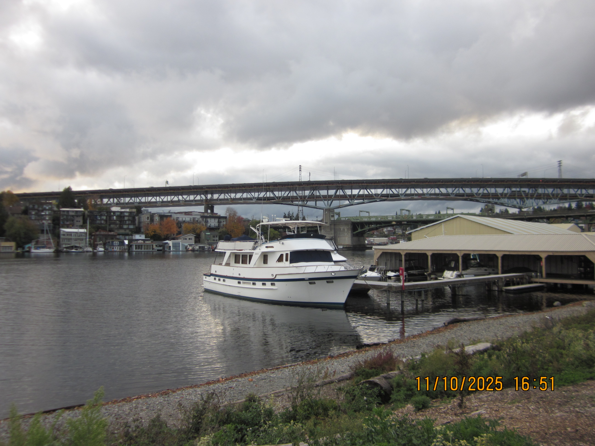
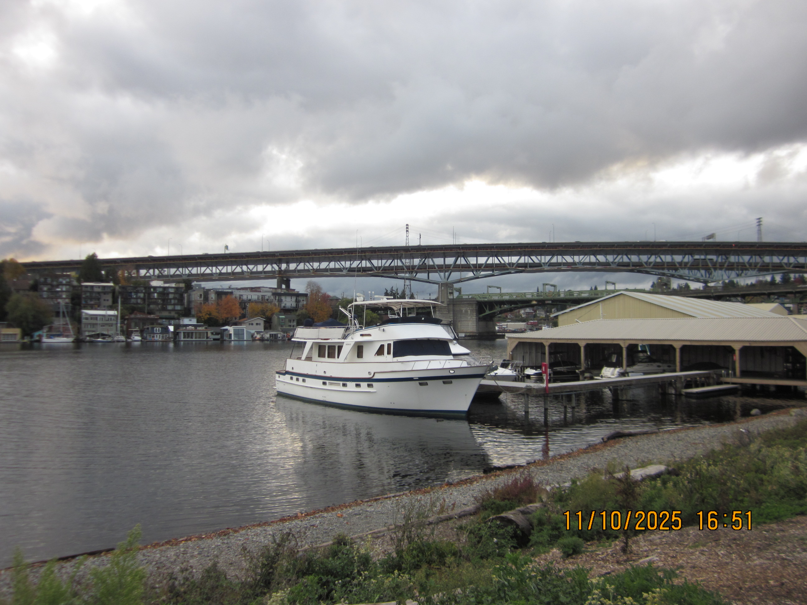

About Me:
I graduated from Skyline High School with an IB Diploma in June 2023 and I have been attending the University of Washington-Seattle as a direct admit computer science major since September of 2023.
I am currently pursuing a business administration minor and am expected to graduate in March of 2027.
I am highly interested in pursuing opportunities in SWE, AI, ML, and Biotechnology.
Languages: Java, Python, C, C++, JavaScript/TypeScript
Technologies and Frameworks: React, Flutter/Dart, Pandas, NumPy, Scikit-learn, Linux/UNIX, Git, Figma, OAuth 2.0, REST APIs
Relevant Coursework:
- Machine Learning: CSE 446 (Python)
- Systems and Hardware: CSE 333 (C, C++, POSIX), CSE 351 (C, Assembly)
- Computer Science Core / Foundations: CSE 332 (Java), CSE 331 (JS, TypeScript), CSE 311/312, CSE 122/123 (Java)
- Business / Management / Finance: ACCTG 219, FIN 205, MKTG 305, IS 305 (R)